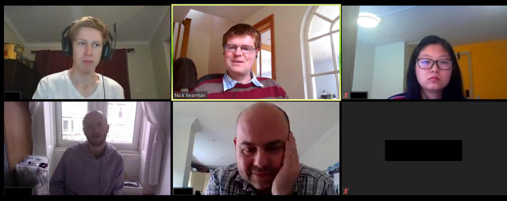
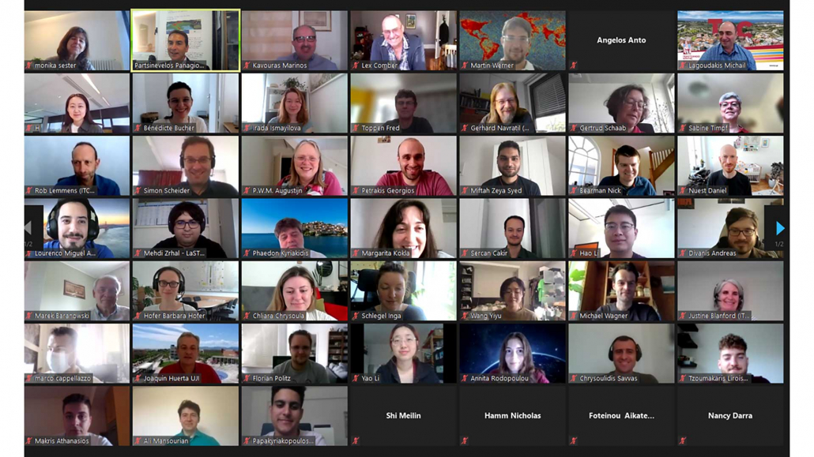
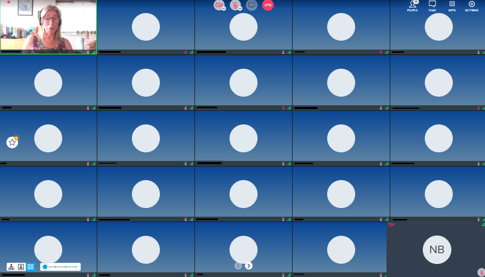

To video, or not to video
“That is the question.”
(Apologies to anyone who has studied English Literature, at any level!)
With nearly everyone participating in more and move video calls, “to share video or not to share video” is, indeed, the question. When participating in an online conference, should the audience members share their video?
We have all attended loads of video conferencing calls over the last 15 months, and I’ve been no expectation to this. I attended two conferences recently, and one thing that struck me was whether the audience members have their cameras on.
When I’m running a training course or presenting, I really love to be able to see people’s faces – so I can see who I am talking to. Of course, I realise this isn’t always possible or something the participants want to do (either because of bandwidth limitations, not having a suitable home environment [although this is less of an issue with virtual backgrounds now] or many other reasons). Therefore when I am running a course I explicitly say at the beginning:
“If you can have your video on and would like to, please do. I really like to be able to see people. However if you have limited bandwidth, or another reason why you don’t want to share your video, that is fine as well.”
With this approach 9 out of 10 people usually put their video on and it makes it a much better experience for me (and, I think for them).

I recently attended two conferences (AGILE 2021 and Coding in the Open), where only the people presenting shared their video, and the attendees did not. There have been many conferences like this, and at some conferences attendees do not have a choice (e.g. if you are using Zoom Webinar, the audience can not share their video).
However for these conferences, there was a choice (AGILE used a standard Zoom room, and Coding in the Open used Bluejeans). For AGILE, the organisers asked participants to turn on their cameras for a group photo! About two-thirds or so of people did turn their cameras on the for photo. However as soon as the photo was done, people turned their cameras off again.

There seems to be an unwritten rule that the audience have their cameras off, and I have seen this is many other conferences as well.

Personally, I don’t really like this, as all you get to see of the other people on the call are black boxes. Yes, you can turn off the blank boxes, but if I am presenting, I like to be able to see who I am presenting to, and if I am in the audience, I also like to see who the audience are.
The other conference I attended was Coding in the Open, and this was run on Bluejeans. Here the attendees were asked to turn of their video because of bandwidth. This is often a worrying concern, and here around 150 had signed up for the free conference, and the organisers were very worried that 150 people joining the call with video might stretch the limits of the platform. In the end, typically we had 40-50 people in each session, so wouldn’t have been an issue.
This is a very common concern for organisers, and compounded by the fact that for free events, often only one third or one half of the people who sign up actually appear. The question then is how much capacity do you need for this event, with additional capacity often costing more money. This is a discussion for another time though.
I did a rough show of hands in the session, and it seems most people would prefer to see the audience, whether they are in the audience or the presenter. Additionally, most programs have the option of hiding the video of other participants, if that is what you prefer.
As an aside, it is worth mentioning that you can turn your own video off in most platforms, and apparently this has been shown to reduce tiredness. I’m not sure it makes a lot of different for me, but for some people it clearly does:
Now that you can remove the icon video of yourself in Google Meet I am finding online meetings far less stressful. Seeing myself (however small on the screen) for the last 15 months has been horrible. I am happy to have my video on + be seen, but not as a mirror back onto myself
— prof jenny pickerill (@JennyPickerill) June 9, 2021
So if you think it might help you, give it a try!
I guess as we work out what the ‘new normal’ is, we will be creating new social rules and expectations for how we work, including in video calls. I would say please do share your video if you can – whether you are in a call of 2, class of 25 or lecture hall of 200. I think it makes all the difference to the person presenting!
Do share your experiences in the comments below and let me know what you think.